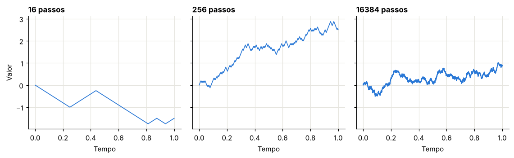
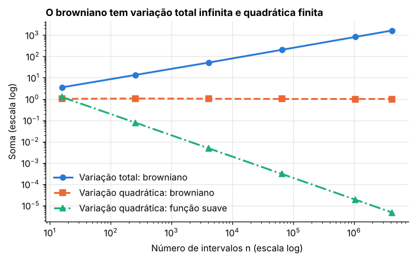
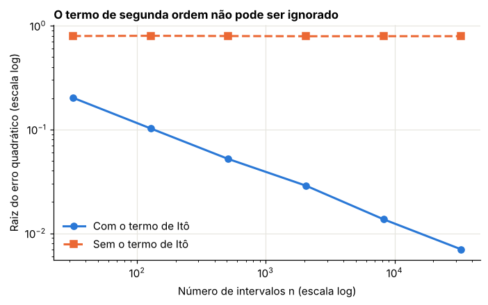
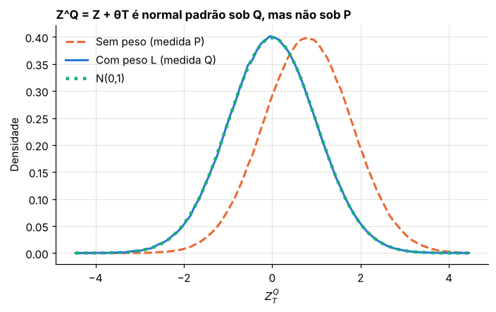

Módulo 4 — Cálculo estocástico: movimento browniano, Itô e Girsanov#
Introdução#
Para levar a teoria do Capítulo 3 ao tempo contínuo, é preciso uma matemática própria para trajetórias aleatórias que não são suaves. O movimento browniano é o modelo básico desse tipo de trajetória: contínuo, mas com oscilações em qualquer escala de tempo, a ponto de não ter derivada em ponto algum.
Essa irregularidade muda as regras do cálculo. Uma integral em relação ao movimento browniano, a integral de Itô, depende de onde se avalia o integrando em cada intervalo, e a escolha financeiramente correta, decidir a posição antes de conhecer o movimento seguinte, faz da integral um martingal. A regra da cadeia também muda: a fórmula de Itô ganha um termo de segunda ordem, porque o quadrado de um incremento browniano não é desprezível. É desse termo que vem o \(-\tfrac12\sigma^2\) que aparece em toda a teoria de opções.
A terceira peça é o teorema de Girsanov, que mostra como trocar a medida de probabilidade alterando apenas a deriva do processo. É ele que transforma a dinâmica observada de um ativo na dinâmica neutra ao risco usada para precificar. O capítulo apresenta as três ferramentas com simulações que as tornam concretas: o leitor vê a variação quadrática convergir, a correção de Itô aparecer na média e a mudança de medida reponderar trajetórias.
Curso: Derivativos com Python, a partir de Derivatives Analytics with Python (Y. Hilpisch, Wiley, 2015). Este módulo cobre: seção 4.5 do livro e o lema de Itô das seções 5.6.1 e 9.7.1.
O que você vai conseguir fazer ao final#
Explicar o que é um movimento browniano e por que ele não tem derivada.
Entender por que a integral estocástica depende do ponto de avaliação, e por que se usa o de Itô.
Aplicar o lema de Itô, sabendo de onde vem o termo extra.
Trocar de medida com o teorema de Girsanov e conectar isso à derivada de Radon-Nikodym do Módulo 3.
Mostrar por que \(\mu\) desaparece do preço de uma opção, agora em tempo contínuo.
Explicar por que estratégias precisam de uma condição de admissibilidade.
Dizer quando um modelo contínuo é completo, e o que muda com volatilidade estocástica.
Como este módulo se relaciona com o livro#
O livro enuncia os resultados de tempo contínuo em alto nível e remete às referências, e não trata do teorema de Girsanov. Aqui construímos os mesmos resultados de forma intuitiva, partindo do mundo discreto do Módulo 3 e conferindo cada passo numericamente. A abordagem é heurística no rigor, mas correta nos resultados; para as demonstrações completas, veja Björk (2004) ou Shreve (2004).
0. Preparação#
import numpy as np
import pandas as pd
import matplotlib.pyplot as plt
from scipy.stats import norm, kurtosis
from IPython.display import display
AZUL, LARANJA, VERDE, CINZA = "#2a78d6", "#eb6834", "#1baf7a", "#8a8a84"
plt.rcParams.update({
"figure.figsize": (7.2, 4.0), "figure.dpi": 110,
"axes.spines.top": False, "axes.spines.right": False,
"axes.grid": True, "grid.color": "#e6e5df", "grid.linewidth": 0.8,
"axes.axisbelow": True, "axes.titlesize": 11, "axes.titleweight": "bold",
"axes.titlelocation": "left", "lines.linewidth": 2.0, "legend.frameon": False,
"font.size": 10,
})
def f3(x):
"""Formata com três casas decimais no padrão brasileiro."""
return f"{x:,.3f}".replace(",", "§").replace(".", ",").replace("§", ".")
def tabela(df):
"""Exibe um DataFrame com os números reais em três casas decimais."""
def fmt(v):
if isinstance(v, (float, np.floating)):
return "n/d" if np.isnan(v) else f3(v)
return v
display(df.map(fmt))
_checks = {"n": 0}
def ok(condicao, mensagem):
"""Verificação do laboratório: interrompe o notebook se a conta não fechar."""
assert bool(condicao), f"FALHOU: {mensagem}"
_checks["n"] += 1
print(f"OK — {mensagem}")
def bsm_call(S, K, T, r, sigma):
d1 = (np.log(S / K) + (r + 0.5 * sigma**2) * T) / (sigma * np.sqrt(T))
return S * norm.cdf(d1) - K * np.exp(-r * T) * norm.cdf(d1 - sigma * np.sqrt(T))
print("Ambiente pronto.")
Ambiente pronto.
1. Do passeio aleatório ao movimento browniano#
Livro: §4.5, Definição 33
1.1 A escala correta#
Comece com o jogo justo do Módulo 3: em cada passo, sobe ou desce com chances iguais. Queremos encurtar os passos, mantendo uma variância finita. Para \(n\) passos em \([0, 1]\), com duração \(\Delta t = 1/n\) e tamanho \(a\):
Para essa variância valer \(t = 1\), é preciso \(a = \sqrt{\Delta t}\). Esse é o coração de tudo o que vem:
Como \(\sqrt{\Delta t} \gg \Delta t\) para \(\Delta t\) pequeno, o movimento aleatório domina a tendência em escalas curtas.
Pelo teorema central do limite, a soma tende à normal. A versão para trajetórias inteiras é o teorema de Donsker: o passeio aleatório reescalado converge para um processo contínuo, o movimento browniano.
1.2 Definição#
Um movimento browniano padrão \((Z_t)\) é um processo adaptado que satisfaz:
\(Z_0 = 0\);
o incremento \(Z_t - Z_s\) é independente de \(\mathcal{F}_s\), para \(s < t\) (o futuro não depende do passado);
\(Z_t - Z_s \sim N(0, t-s)\);
as trajetórias são contínuas.
Laboratório 1.1 — A convergência#
A soma de \(n\) passos \(\pm\sqrt{1/n}\) pode ser amostrada diretamente pela distribuição binomial. Para um passeio de \(n\) passos, a teoria dá curtose em excesso igual a \(-2/n\).
rng = np.random.default_rng(501)
linhas = []
for n in [1, 4, 16, 64, 1024, 65536]:
W = (2 * rng.binomial(n, 0.5, 2_000_000) - n) / np.sqrt(n)
linhas.append({"Passos n": n, "Variância": W.var(), "Curtose em excesso": float(kurtosis(W)), "Teoria: −2/n": -2 / n, "P(W ≤ 1)": (W <= 1 + 1e-12).mean()})
df = pd.DataFrame(linhas)
tabela(df)
print("Φ(1) =", f3(norm.cdf(1)))
ok(np.allclose(df["Variância"], 1, atol=0.005), "com passo √Δt, a variância é 1 em qualquer n")
ok(np.allclose(df["Curtose em excesso"], df["Teoria: −2/n"], atol=0.02), "a curtose do passeio segue −2/n")
ok(abs(df["P(W ≤ 1)"].iloc[-1] - norm.cdf(1)) < 0.003, "para n grande, a distribuição é a normal")
rng = np.random.default_rng(502)
fig, eixos = plt.subplots(1, 3, figsize=(10.5, 3.3), sharey=True)
for ax, n in zip(eixos, [16, 256, 16384]):
passos = rng.choice([-1.0, 1.0], size=n) * np.sqrt(1 / n)
ax.plot(np.linspace(0, 1, n + 1), np.r_[0.0, np.cumsum(passos)], color=AZUL, lw=1.1)
ax.set_title(f"{n} passos")
ax.set_xlabel("Tempo")
eixos[0].set_ylabel("Valor")
plt.tight_layout()
plt.show()
| Passos n | Variância | Curtose em excesso | Teoria: −2/n | P(W ≤ 1) | |
|---|---|---|---|---|---|
| 0 | 1 | 1,000 | -2,000 | -2,000 | 1,000 |
| 1 | 4 | 1,000 | -0,501 | -0,500 | 0,938 |
| 2 | 16 | 0,998 | -0,122 | -0,125 | 0,895 |
| 3 | 64 | 1,001 | -0,031 | -0,031 | 0,869 |
| 4 | 1024 | 0,999 | -0,006 | -0,002 | 0,849 |
| 5 | 65536 | 0,999 | 0,004 | -0,000 | 0,843 |
Φ(1) = 0,841
OK — com passo √Δt, a variância é 1 em qualquer n
OK — a curtose do passeio segue −2/n
OK — para n grande, a distribuição é a normal

2. As propriedades estranhas do browniano#
2.1 Martingale#
Se \(s < t\), usando a independência dos incrementos:
Outro martingale importante é \(Z_t^2 - t\). De fato, escrevendo \(Z_t = Z_s + \Delta\):
Subtraindo \(t\) dos dois lados, resulta \(\mathbb{E}_s[Z_t^2 - t] = Z_s^2 - s\).
2.2 Covariância#
Para \(s \le t\): \(\ \mathbb{E}[Z_s Z_t] = \mathbb{E}[Z_s(Z_s + \Delta)] = \mathbb{E}[Z_s^2] + 0 = s\). Logo, \(\text{Cov}(Z_s, Z_t) = \min(s, t)\).
2.3 Variação total infinita#
Particione \([0,T]\) em \(n\) intervalos de tamanho \(\Delta t\). A soma dos valores absolutos tem esperança
Em palavras: a distância percorrida pelo browniano em qualquer intervalo é infinita. Por isso, \(Z\) não é derivável em lugar nenhum e não se pode escrever a integral \(\int H\,dZ\) como uma integral ordinária.
2.4 Variação quadrática finita#
Agora eleve ao quadrado:
Cada termo tem média \(\Delta t\) e variância \(2\Delta t^2\). Somando \(n\) termos independentes:
A variância vai a zero, então \(Q_n\) deixa de ser aleatório: converge para o número \(T\). É a principal surpresa do cálculo estocástico e é escrita como
Uma função suave faz o oposto: variação total finita e variação quadrática zero.
Laboratório 2.1 — Propriedades e variação#
rng = np.random.default_rng(503)
M_, I_ = 100, 200_000
dZ = np.sqrt(1 / M_) * rng.standard_normal((M_, I_))
Z = np.cumsum(dZ, axis=0)
t25, t75 = 24, 74
tabela(pd.DataFrame([
{"Grandeza": "Cov(Z(0,25), Z(0,75))", "Simulado": float(np.mean(Z[t25] * Z[t75])), "Teoria": 0.25},
{"Grandeza": "Corr de incrementos disjuntos", "Simulado": float(np.corrcoef(Z[t25], Z[t75] - Z[t25])[0, 1]), "Teoria": 0.0},
{"Grandeza": "E[Z(1)² − 1]", "Simulado": float(np.mean(Z[-1] ** 2 - 1)), "Teoria": 0.0},
{"Grandeza": "E[(Z(1)²−1) | Z(0,75)>0] − E[(Z(0,75)²−0,75) | Z(0,75)>0]", "Simulado": float(np.mean((Z[-1] ** 2 - 1)[Z[t75] > 0]) - np.mean((Z[t75] ** 2 - 0.75)[Z[t75] > 0])), "Teoria": 0.0},
]))
ok(abs(np.mean(Z[t25] * Z[t75]) - 0.25) < 0.005, "Cov(Z_s, Z_t) = min(s, t)")
ok(abs(np.corrcoef(Z[t25], Z[t75] - Z[t25])[0, 1]) < 0.01, "incrementos disjuntos são não correlacionados")
ok(abs(np.mean((Z[-1] ** 2 - 1)[Z[t75] > 0]) - np.mean((Z[t75] ** 2 - 0.75)[Z[t75] > 0])) < 0.015, "Z² − t é martingale, inclusive condicionado ao passado")
del Z, dZ
rng = np.random.default_rng(504)
K_max = 22
n_fino = 2**K_max
incr = np.sqrt(1 / n_fino) * rng.standard_normal(n_fino)
trajeto = np.r_[0.0, np.cumsum(incr)]
grade_fina = np.linspace(0, 1, n_fino + 1)
suave = np.sin(2 * np.pi * grade_fina)
linhas = []
for k in [4, 8, 12, 16, 20, 22]:
p = 2 ** (K_max - k)
z = trajeto[::p]
s = suave[::p]
n = 2**k
linhas.append({"n": n, "VT browniano": float(np.abs(np.diff(z)).sum()), "Teoria √(2n/π)": float(np.sqrt(2 * n / np.pi)), "VQ browniano": float((np.diff(z) ** 2).sum()), "VT seno": float(np.abs(np.diff(s)).sum()), "VQ seno": float((np.diff(s) ** 2).sum())})
var = pd.DataFrame(linhas)
tabela(var)
fig, ax = plt.subplots()
ax.loglog(var["n"], var["VT browniano"], color=AZUL, marker="o", markersize=6, label="Variação total: browniano")
ax.loglog(var["n"], var["VQ browniano"], color=LARANJA, marker="s", markersize=6, ls="--", label="Variação quadrática: browniano")
ax.loglog(var["n"], var["VQ seno"], color=VERDE, marker="^", markersize=6, ls="-.", label="Variação quadrática: função suave")
ax.set_title("O browniano tem variação total infinita e quadrática finita")
ax.set_xlabel("Número de intervalos n (escala log)")
ax.set_ylabel("Soma (escala log)")
ax.legend()
plt.show()
ult = var.iloc[-1]
ok(abs(ult["VT browniano"] / ult["Teoria √(2n/π)"] - 1) < 0.01, "a variação total cresce como √(2n/π)")
ok(abs(ult["VQ browniano"] - 1) < 0.01, "a variação quadrática converge para T = 1")
ok(ult["VQ seno"] < 1e-4 and abs(ult["VT seno"] - 4) < 1e-3, "em função suave, a variação quadrática some")
| Grandeza | Simulado | Teoria | |
|---|---|---|---|
| 0 | Cov(Z(0,25), Z(0,75)) | 0,251 | 0,250 |
| 1 | Corr de incrementos disjuntos | 0,002 | 0,000 |
| 2 | E[Z(1)² − 1] | 0,000 | 0,000 |
| 3 | E[(Z(1)²−1) | Z(0,75)>0] − E[(Z(0,75)²−0,75) |... | 0,001 | 0,000 |
OK — Cov(Z_s, Z_t) = min(s, t)
OK — incrementos disjuntos são não correlacionados
OK — Z² − t é martingale, inclusive condicionado ao passado
| n | VT browniano | Teoria √(2n/π) | VQ browniano | VT seno | VQ seno | |
|---|---|---|---|---|---|---|
| 0 | 16 | 3,523 | 3,192 | 1,012 | 4,000 | 1,218 |
| 1 | 256 | 13,441 | 12,766 | 1,052 | 4,000 | 0,077 |
| 2 | 4096 | 51,247 | 51,065 | 1,024 | 4,000 | 0,005 |
| 3 | 65536 | 204,107 | 204,258 | 1,002 | 4,000 | 0,000 |
| 4 | 1048576 | 816,699 | 817,034 | 0,999 | 4,000 | 0,000 |
| 5 | 4194304 | 1.633,949 | 1.634,068 | 1,000 | 4,000 | 0,000 |

OK — a variação total cresce como √(2n/π)
OK — a variação quadrática converge para T = 1
OK — em função suave, a variação quadrática some
3. A integral de Itô#
Livro: §4.5, definições 28 a 31
3.1 O problema#
Queremos dar sentido ao ganho de uma estratégia, \(\int_0^T H_s\,dZ_s\), o análogo contínuo de \(G_t\) no Módulo 3. Tentamos o limite de somas:
Numa integral ordinária, a escolha de \(\tau_i\) não importa. Aqui importa muito. Veja com \(H = Z\) e denote \(a = Z_{t_i}\), \(b = Z_{t_{i+1}}\). Usando duas identidades algébricas:
Somando no tempo, os termos \(b^2 - a^2\) telescopam, e os termos \((b-a)^2\) dão a variação quadrática:
Ponto esquerdo: \(\sum a(b-a) \to \tfrac12 Z_T^2 - \tfrac12 T\).
Ponto direito: \(\sum b(b-a) \to \tfrac12 Z_T^2 + \tfrac12 T\).
Ponto médio (Stratonovich): \(\to \tfrac12 Z_T^2\).
A diferença é exatamente a variação quadrática, que seria zero num mundo suave.
3.2 Por que usar o ponto esquerdo#
Porque é o único coerente com a negociação: você decide a posição antes do movimento. É exatamente a condição de previsibilidade do Módulo 3. A integral de Itô com integrando previsível é o ganho de uma estratégia factível, e herda a propriedade central:
O livro constrói a integral com as estratégias simples previsíveis: posições constantes entre datas. A integral geral é o limite delas.
3.3 Isometria de Itô#
Para \(H\) previsível e quadrado-integrável:
A prova na forma simples. Abrindo o quadrado de \(\sum_i H_i\Delta Z_i\):
Termos cruzados, \(i < j\): \(\mathbb{E}[H_i\Delta Z_i H_j\Delta Z_j] = \mathbb{E}\big[H_i\Delta Z_i H_j\,\mathbb{E}_{t_j}[\Delta Z_j]\big] = 0\).
Termos quadrados: \(\mathbb{E}[H_i^2\Delta Z_i^2] = \mathbb{E}\big[H_i^2\,\mathbb{E}_{t_i}[\Delta Z_i^2]\big] = \mathbb{E}[H_i^2]\Delta t\).
Note que os dois passos usam \(H_i\) previsível.
Laboratório 3.1 — O ponto de avaliação muda o resultado#
rng = np.random.default_rng(505)
n, paths = 4096, 2000
meio = np.sqrt(1 / (2 * n)) * rng.standard_normal((2 * n, paths))
Zf = np.vstack([np.zeros(paths), np.cumsum(meio, axis=0)])
inc = Zf[2::2] - Zf[:-2:2]
somas = {
"Esquerdo (Itô)": ((Zf[:-2:2] * inc).sum(axis=0), 0.5 * Zf[-1] ** 2 - 0.5),
"Médio (Stratonovich)": ((Zf[1::2] * inc).sum(axis=0), 0.5 * Zf[-1] ** 2),
"Direito": ((Zf[2::2] * inc).sum(axis=0), 0.5 * Zf[-1] ** 2 + 0.5),
}
linhas = []
for nome, (soma, limite) in somas.items():
linhas.append({"Ponto de avaliação": nome, "Média da soma": float(soma.mean()), "Raiz do erro quadrático contra o limite": float(np.sqrt(np.mean((soma - limite) ** 2)))})
res = pd.DataFrame(linhas).set_index("Ponto de avaliação")
tabela(res.reset_index())
ok(all(res["Raiz do erro quadrático contra o limite"] < 0.03), "as três somas convergem para seus limites teóricos")
ok(abs(res.loc["Esquerdo (Itô)", "Média da soma"]) < 0.07, "só a integral de Itô tem média zero")
ok(res.loc["Direito", "Média da soma"] > 0.9, "o ponto direito espia o futuro e tem média T")
del Zf, meio, inc
| Ponto de avaliação | Média da soma | Raiz do erro quadrático contra o limite | |
|---|---|---|---|
| 0 | Esquerdo (Itô) | -0,004 | 0,011 |
| 1 | Médio (Stratonovich) | 0,497 | 0,008 |
| 2 | Direito | 0,997 | 0,011 |
OK — as três somas convergem para seus limites teóricos
OK — só a integral de Itô tem média zero
OK — o ponto direito espia o futuro e tem média T
Laboratório 3.2 — A isometria#
Para \(H = Z\): \(\mathbb{E}\int_0^1 Z_s^2\,ds = \int_0^1 s\,ds = \tfrac12\).
rng = np.random.default_rng(506)
n, paths = 250, 300_000
dt = 1 / n
Z, integral, energia = np.zeros(paths), np.zeros(paths), np.zeros(paths)
for _ in range(n):
d = np.sqrt(dt) * rng.standard_normal(paths)
integral += Z * d
energia += Z**2 * dt
Z += d
tabela(pd.DataFrame([
{"Grandeza": "E[∫Z dZ]", "Simulado": float(integral.mean()), "Teoria": 0.0},
{"Grandeza": "E[(∫Z dZ)²]", "Simulado": float((integral**2).mean()), "Teoria": 0.5 * (1 - 1 / n)},
{"Grandeza": "E[∫Z² ds]", "Simulado": float(energia.mean()), "Teoria": 0.5 * (1 - 1 / n)},
]))
ok(abs((integral**2).mean() - energia.mean()) < 0.01, "isometria de Itô")
ok(abs(integral.mean()) < 0.005, "a integral de Itô tem média zero")
| Grandeza | Simulado | Teoria | |
|---|---|---|---|
| 0 | E[∫Z dZ] | -0,000 | 0,000 |
| 1 | E[(∫Z dZ)²] | 0,496 | 0,498 |
| 2 | E[∫Z² ds] | 0,498 | 0,498 |
OK — isometria de Itô
OK — a integral de Itô tem média zero
3.4 Quando “martingale” falha: as estratégias de dobrar#
A integral de Itô com integrando sem controle é apenas um martingale local, e isso permite uma construção perturbadora. Considere
Sua variância é \(\int_0^t \frac{ds}{1-s} = -\ln(1-t)\), que tende a infinito quando \(t \to 1\). \(X\) se comporta como um browniano num relógio acelerado, \(s = -\ln(1-t)\). Um browniano atinge qualquer nível, cedo ou tarde, com probabilidade 1. Logo:
Comece com zero e pare ao atingir \(+1\): antes de \(t = 1\), você terá ganho 1 com certeza.
É o análogo contínuo da estratégia de dobrar a aposta. O problema está no caminho: o valor pode cair arbitrariamente antes de voltar. Isso exige crédito ilimitado.
A solução é restringir o conjunto de estratégias. Admissível (Def. 35 do livro) significa que o valor nunca cai abaixo de um limite \(-\alpha\). Com esse limite, a estratégia para em \(+1\) ou em \(-\alpha\). Pelo teorema de parada de martingales, \(\mathbb{E}[\text{ganho}] = 0\), ou seja,
O almoço grátis desaparece.
Laboratório 3.3 — Limites de crédito#
Primeiro, a probabilidade de já ter alcançado \(+1\) em cada data, sem limite. Pelo princípio da reflexão, para um browniano no relógio \(s\): \(P(\max \ge 1) = 2\big(1 - \Phi(1/\sqrt{s})\big)\). Depois, a simulação com limite de crédito.
linhas = []
for rotulo, falta in [("0,500", 0.5), ("0,100", 0.1), ("0,001", 1e-3), ("10⁻⁹", 1e-9), ("10⁻³⁰", 1e-30)]:
s = -np.log(falta)
linhas.append({"Tempo restante 1 − t": rotulo, "Relógio s": float(s), "P(atingiu +1 até t)": float(2 * (1 - norm.cdf(1 / np.sqrt(s))))})
tabela(pd.DataFrame(linhas))
rng = np.random.default_rng(507)
ds = 0.002
linhas = []
for alfa in [1.0, 3.0, 9.0]:
n = 40_000
x = np.zeros(n)
ativo = np.arange(n)
ganho = np.zeros(n)
while ativo.size:
x[ativo] += np.sqrt(ds) * rng.standard_normal(ativo.size)
cima, baixo = x[ativo] >= 1, x[ativo] <= -alfa
ganho[ativo[cima]], ganho[ativo[baixo]] = 1.0, -alfa
ativo = ativo[~(cima | baixo)]
linhas.append({"Limite de crédito α": alfa, "P(+1): simulada": float((ganho > 0).mean()), "P(+1): teoria α/(1+α)": alfa / (1 + alfa), "Ganho médio": float(ganho.mean()), "Erro-padrão": float(ganho.std(ddof=1) / np.sqrt(n))})
lim = pd.DataFrame(linhas)
tabela(lim)
ok(np.allclose(lim["P(+1): simulada"], lim["P(+1): teoria α/(1+α)"], atol=0.012), "com limite de crédito, P(+1) = α/(1+α)")
ok((lim["Ganho médio"].abs() < 4 * lim["Erro-padrão"] + 0.02).all(), "com limite de crédito, o ganho médio é zero")
| Tempo restante 1 − t | Relógio s | P(atingiu +1 até t) | |
|---|---|---|---|
| 0 | 0,500 | 0,693 | 0,230 |
| 1 | 0,100 | 2,303 | 0,510 |
| 2 | 0,001 | 6,908 | 0,704 |
| 3 | 10⁻⁹ | 20,723 | 0,826 |
| 4 | 10⁻³⁰ | 69,078 | 0,904 |
| Limite de crédito α | P(+1): simulada | P(+1): teoria α/(1+α) | Ganho médio | Erro-padrão | |
|---|---|---|---|---|---|
| 0 | 1,000 | 0,502 | 0,500 | 0,003 | 0,005 |
| 1 | 3,000 | 0,747 | 0,750 | -0,014 | 0,009 |
| 2 | 9,000 | 0,898 | 0,900 | -0,022 | 0,015 |
OK — com limite de crédito, P(+1) = α/(1+α)
OK — com limite de crédito, o ganho médio é zero
4. O lema de Itô#
Livro: §5.6.1 e §9.7.1
4.1 De onde vem#
Seja \(f(S, t)\) suave e \(dS_t = m_t\,dt + v_t\,dZ_t\). A expansão de Taylor de segunda ordem é
Calculamos \((dS)^2 = m^2\,dt^2 + 2mv\,dt\,dZ + v^2\,(dZ)^2\). Usamos as regras de multiplicação, que resumem a Seção 2:
\(\times\) |
\(dt\) |
\(dZ\) |
|---|---|---|
\(dt\) |
0 |
0 |
\(dZ\) |
0 |
\(dt\) |
Por ordem de grandeza: \(dt^2\) e \(dt\,dZ \sim dt^{3/2}\) são desprezíveis; \((dZ)^2 = dt\) não. Sobra \((dS)^2 = v^2\,dt\), e resulta o lema de Itô:
No cálculo comum, o termo de segunda ordem desaparece. Aqui, como \((dZ)^2\) tem ordem \(dt\), ele sobrevive. Esse é o único ingrediente novo.
4.2 Exemplo 1: \(f = Z^2\)#
Com \(m = 0\), \(v = 1\), \(f' = 2Z\), \(f'' = 2\):
Foi o resultado que obtivemos da soma à esquerda.
4.3 Exemplo 2: resolver o browniano geométrico#
Seja \(dS = \mu S\,dt + \sigma S\,dZ\). Aplicamos Itô a \(f = \ln S\), com \(f' = 1/S\), \(f'' = -1/S^2\), \(m = \mu S\), \(v = \sigma S\):
O lado direito não tem \(S\), então a integração é imediata:
Fica enfim justificado o termo \(-\tfrac12\sigma^2\) que usamos como caixa-preta desde o Módulo 1. Ele é o termo de Itô.
4.4 Versão multidimensional#
Com vários processos, as regras ganham \(dZ^1 dZ^2 = \rho\,dt\), e surgem termos cruzados. Para \(f(X,Y)\):
O caso \(f = XY\) é a regra do produto: \(d(XY) = X\,dY + Y\,dX + dX\,dY\).
Por que vale a atenção: a dinâmica do modelo geral (BCC97) tem índice, variância e juros simultaneamente, e no Módulo 11 precisaremos exatamente dessa versão.
Laboratório 4.1 — Conferindo o lema trajetória a trajetória#
Com \(f(z) = e^z\), temos \(f' = f'' = e^z\). Comparamos três quantidades em cada trajetória: \(f(Z_T) - f(0)\), a soma de Itô com correção e a soma sem correção.
rng = np.random.default_rng(508)
n_max, paths = 2**15, 1000
base = np.sqrt(1 / n_max) * rng.standard_normal((n_max, paths))
Z_ = np.vstack([np.zeros(paths), np.cumsum(base, axis=0)])
linhas = []
for n in [2**k for k in (5, 7, 9, 11, 13, 15)]:
p = n_max // n
z = Z_[::p]
dz = np.diff(z, axis=0)
fl = np.exp(z[:-1])
com = (fl * dz).sum(axis=0) + 0.5 * fl.sum(axis=0) / n
sem = (fl * dz).sum(axis=0)
alvo = np.exp(z[-1]) - 1
linhas.append({"n": n, "Erro com o termo de Itô": float(np.sqrt(np.mean((com - alvo) ** 2))), "Erro sem o termo de Itô": float(np.sqrt(np.mean((sem - alvo) ** 2)))})
ito = pd.DataFrame(linhas)
tabela(ito)
incl = np.polyfit(np.log(ito["n"]), np.log(ito["Erro com o termo de Itô"]), 1)[0]
print("Inclinação log-log do erro com correção:", f3(incl))
fig, ax = plt.subplots()
ax.loglog(ito["n"], ito["Erro com o termo de Itô"], color=AZUL, marker="o", markersize=6, label="Com o termo de Itô")
ax.loglog(ito["n"], ito["Erro sem o termo de Itô"], color=LARANJA, marker="s", markersize=6, ls="--", label="Sem o termo de Itô")
ax.set_title("O termo de segunda ordem não pode ser ignorado")
ax.set_xlabel("Número de intervalos n (escala log)")
ax.set_ylabel("Raiz do erro quadrático (escala log)")
ax.legend()
plt.show()
ok(-0.6 < incl < -0.4, "com o termo de Itô, o erro cai como 1/√n")
ok(ito["Erro sem o termo de Itô"].iloc[-1] > 0.5, "sem o termo de Itô, o erro não some")
del base, Z_
| n | Erro com o termo de Itô | Erro sem o termo de Itô | |
|---|---|---|---|
| 0 | 32 | 0,202 | 0,797 |
| 1 | 128 | 0,102 | 0,801 |
| 2 | 512 | 0,052 | 0,796 |
| 3 | 2048 | 0,029 | 0,792 |
| 4 | 8192 | 0,014 | 0,794 |
| 5 | 32768 | 0,007 | 0,793 |
Inclinação log-log do erro com correção: -0,483

OK — com o termo de Itô, o erro cai como 1/√n
OK — sem o termo de Itô, o erro não some
Laboratório 4.2 — A solução exata contra o esquema de Euler, e a regra do produto#
O esquema de Euler discretiza a equação diretamente: \(S_{i+1} = S_i(1 + \mu\Delta t + \sigma\Delta Z_i)\). Com os mesmos choques, comparamos com a solução exata. O erro trajetória a trajetória é o chamado erro forte.
Em seguida, a regra do produto para dois brownianos com correlação \(\rho\): como \(\mathbb{E}[d(XY)] = \mathbb{E}[dX\,dY] = \rho\,dt\), temos \(\mathbb{E}[X_TY_T] = \rho T\).
rng = np.random.default_rng(509)
mu, sigma, S0 = 0.08, 0.3, 100.0
n_max, paths = 2**12, 20_000
ZT = None
linhas = []
inc_base = np.sqrt(1 / n_max) * rng.standard_normal((n_max, paths))
exato = S0 * np.exp((mu - 0.5 * sigma**2) + sigma * inc_base.sum(axis=0))
for n in [4, 16, 64, 256, 1024, 4096]:
p = n_max // n
S = np.full(paths, S0)
for i in range(n):
S = S * (1 + mu / n + sigma * inc_base[i * p : (i + 1) * p].sum(axis=0))
linhas.append({"Passos n": n, "Erro forte de Euler": float(np.sqrt(np.mean((S - exato) ** 2))), "Média Euler": float(S.mean())})
eul = pd.DataFrame(linhas)
tabela(eul)
inc_e = np.polyfit(np.log(eul["Passos n"].iloc[2:]), np.log(eul["Erro forte de Euler"].iloc[2:]), 1)[0]
print("Inclinação do erro forte:", f3(inc_e), "| Média da solução exata nesta amostra:", f3(float(exato.mean())), "| E[S_T] teórico:", f3(S0 * np.exp(mu)))
ok(-0.62 < inc_e < -0.38, "Euler tem erro forte de ordem 1/√n")
del inc_base
rng = np.random.default_rng(510)
rho, n, paths = -0.6, 250, 400_000
X, Y, p1, p2 = np.zeros(paths), np.zeros(paths), np.zeros(paths), np.zeros(paths)
for _ in range(n):
a = np.sqrt(1 / n) * rng.standard_normal(paths)
b = rho * a + np.sqrt(1 - rho**2) * np.sqrt(1 / n) * rng.standard_normal(paths)
p1 += X * b
p2 += Y * a
X += a
Y += b
prod_ok = np.sqrt(np.mean((X * Y - (p1 + p2 + rho)) ** 2))
print("E[X·Y]:", f3(float(np.mean(X * Y))), "| ρ·T:", f3(rho), "| Raiz do erro da regra do produto:", f3(float(prod_ok)))
ok(abs(np.mean(X * Y) - rho) < 0.01, "E[X_T Y_T] = ρT")
ok(prod_ok < 0.08, "regra do produto: X_T Y_T ≈ ∫X dY + ∫Y dX + ρT")
| Passos n | Erro forte de Euler | Média Euler | |
|---|---|---|---|
| 0 | 4 | 3,611 | 107,944 |
| 1 | 16 | 1,782 | 108,005 |
| 2 | 64 | 0,894 | 108,024 |
| 3 | 256 | 0,449 | 108,022 |
| 4 | 1024 | 0,227 | 108,026 |
| 5 | 4096 | 0,112 | 108,026 |
Inclinação do erro forte: -0,499 | Média da solução exata nesta amostra: 108,026 | E[S_T] teórico: 108,329
OK — Euler tem erro forte de ordem 1/√n
E[X·Y]: -0,602 | ρ·T: -0,600 | Raiz do erro da regra do produto: 0,074
OK — E[X_T Y_T] = ρT
OK — regra do produto: X_T Y_T ≈ ∫X dY + ∫Y dX + ρT
5. Saltos e a noção de semimartingale#
Livro: §4.5, definições 30 a 34
5.1 Que processos podem ser preços#
O ganho \(\int\phi\,dS\) só está bem definido se \(S\) for um semimartingale. Felizmente, a classe é grande. A caracterização prática (Def. 32) é:
Tudo o que usaremos no curso cabe aqui. Para o browniano geométrico: em \(\ln S_t\), \(A_t = (\mu - \tfrac12\sigma^2)t\) e \(M_t = \sigma Z_t\).
5.2 Processo de Poisson#
O processo de Lévy (Def. 34) generaliza o browniano mantendo incrementos independentes e estacionários. O exemplo que usaremos é o processo de Poisson \(N_t\), que conta eventos que chegam à taxa \(\lambda\):
\(N_t\) não é martingale, pois só sobe. Sua versão compensada, \(N_t - \lambda t\), é.
5.3 Compensando os saltos#
Se um salto multiplica \(S\) por \(e^J\), com \(\bar\kappa = \mathbb{E}[e^J - 1]\), o crescimento médio causado pelos saltos é \(\lambda\bar\kappa\) por unidade de tempo. Para que o retorno total seja \(r\), tiramos essa parcela do drift:
Essa é a origem do termo \(\lambda\bar\kappa\) usado no Módulo 1. A regra \(dN\,dZ = 0\) do livro diz que saltos e browniano não interagem. Em Itô, o salto entra pela diferença exata \(f(S_- e^J) - f(S_-)\), e não pela derivada.
Laboratório 5.1 — A compensação#
rng = np.random.default_rng(511)
r, sig, T = 0.03, 0.15, 1.0
lam, mu_j, delta_j = 1.5, -0.1, 0.12
n = 2_000_000
kappa = np.exp(mu_j + 0.5 * delta_j**2) - 1
N = rng.poisson(lam * T, n)
J = N * mu_j + np.sqrt(N) * delta_j * rng.standard_normal(n)
Zt = np.sqrt(T) * rng.standard_normal(n)
com = np.exp((r - lam * kappa - 0.5 * sig**2) * T + sig * Zt + J)
sem = np.exp((r - 0.5 * sig**2) * T + sig * Zt + J)
tabela(pd.DataFrame([
{"Grandeza": "E[N_T]", "Simulado": float(N.mean()), "Teoria": lam * T},
{"Grandeza": "Var[N_T]", "Simulado": float(N.var()), "Teoria": lam * T},
{"Grandeza": "E[S_T/S_0] com compensação", "Simulado": float(com.mean()), "Teoria": float(np.exp(r * T))},
{"Grandeza": "E[S_T/S_0] sem compensação", "Simulado": float(sem.mean()), "Teoria": float(np.exp((r + lam * kappa) * T))},
]))
ok(abs(N.mean() - lam * T) < 0.005 and abs(N.var() - lam * T) < 0.01, "Poisson tem média e variância iguais a λT")
ok(abs(com.mean() - np.exp(r * T)) < 0.002, "o termo λκ deixa o preço descontado em martingale")
| Grandeza | Simulado | Teoria | |
|---|---|---|---|
| 0 | E[N_T] | 1,499 | 1,500 |
| 1 | Var[N_T] | 1,500 | 1,500 |
| 2 | E[S_T/S_0] com compensação | 1,030 | 1,030 |
| 3 | E[S_T/S_0] sem compensação | 0,902 | 0,902 |
OK — Poisson tem média e variância iguais a λT
OK — o termo λκ deixa o preço descontado em martingale
6. Mudança de medida: o teorema de Girsanov#
Conteúdo além do livro; base da precificação neutra ao risco
No Módulo 3, \(Q\) se obtinha de \(P\) reponderando estados com \(L = Q/P\). Em tempo contínuo, cada trajetória individual tem probabilidade zero, mas a ideia sobrevive: \(L\) é a densidade de \(Q\) em relação a \(P\).
6.1 Uma única normal#
Seja \(Z \sim N(0,1)\) sob \(P\). Queremos reponderar de modo que passe a ter média \(-\theta\). A densidade-alvo sobre a original é
(Basta expandir \((z+\theta)^2 = z^2 + 2\theta z + \theta^2\) no expoente.) Veja que a mudança de medida desloca a média sem alterar a variância.
6.2 Da árvore ao contínuo#
Tome um passeio com passos \(\pm\sqrt{\Delta t}\), com probabilidade \(\tfrac12\) em cada direção sob \(P\). Sob \(Q\), a probabilidade de alta é \(\tfrac12(1 - \theta\sqrt{\Delta t})\). O passo tem média
Temos um drift de \(-\theta\) por unidade de tempo, criado apenas reponderando caminhos. O peso de cada passo é \(L_i = 1 - \theta\,\varepsilon_i\sqrt{\Delta t}\), com \(\varepsilon_i = \pm 1\). Para a trajetória completa:
O \(-\tfrac12\theta^2 T\) vem do termo de segunda ordem do logaritmo: a mesma origem do termo de Itô.
6.3 O teorema#
Seja \(\theta\) constante e defina em \([0,T]\) uma medida \(Q\) por
Então \(Z^Q_t = Z_t + \theta t\) é um movimento browniano sob \(Q\).
Prova, em passos. Basta mostrar que, para \(s < t\), o incremento de \(Z^Q\) tem distribuição normal \(N(0, t-s)\) e independe de \(\mathcal{F}_s\), sob \(Q\). Sejam \(\Delta = t-s\) e \(\Delta Z = Z_t - Z_s\).
Passo 1. Pela fórmula de Bayes do Módulo 3, usando \(L_t = \mathbb{E}_t^P[L_T] = \exp(-\theta Z_t - \tfrac12\theta^2t)\):
Passo 2. Substitua \(L_t/L_s = \exp(-\theta\Delta Z - \tfrac12\theta^2\Delta)\) e agrupe os expoentes:
Passo 3. \(\Delta Z\) é independente de \(\mathcal{F}_s\) e normal sob \(P\). Pela fórmula \(\mathbb{E}[e^{aZ}] = e^{a^2/2}\) do Módulo 1:
Passo 4. É a função geradora de momentos de uma \(N(0, \Delta)\), sem dependência de \(\mathcal{F}_s\). A distribuição fica determinada, e o incremento é independente do passado.
Em uma frase: mudar de medida muda o drift, mas não muda a volatilidade.
Laboratório 6.1 — A árvore converge para a densidade exponencial#
rng = np.random.default_rng(512)
theta, T = 0.8, 1.0
linhas = []
for n in [4, 16, 64, 256, 1024, 4096]:
dt = T / n
N_up = rng.binomial(n, 0.5, 300_000)
N_dw = n - N_up
ZT_ = (N_up - N_dw) * np.sqrt(dt)
arv = (1 - theta * np.sqrt(dt)) ** N_up * (1 + theta * np.sqrt(dt)) ** N_dw
expo = np.exp(-theta * ZT_ - 0.5 * theta**2 * T)
linhas.append({"Passos n": n, "Média do peso": float(arv.mean()), "Média ponderada de Z_T": float(np.mean(arv * ZT_)), "Teoria: −θT": -theta * T, "Erro do peso contra a exponencial": float(np.sqrt(np.mean((arv - expo) ** 2)))})
c = pd.DataFrame(linhas)
tabela(c)
ok(np.allclose(c["Média do peso"], 1, atol=0.01), "o peso tem média 1: é uma densidade")
ok(np.allclose(c["Média ponderada de Z_T"], -theta * T, atol=0.015), "a reponderação cria um drift −θ")
ok(c["Erro do peso contra a exponencial"].iloc[-1] < 0.05 and c["Erro do peso contra a exponencial"].iloc[-1] < c["Erro do peso contra a exponencial"].iloc[1], "o peso da árvore converge para a densidade exponencial")
| Passos n | Média do peso | Média ponderada de Z_T | Teoria: −θT | Erro do peso contra a exponencial | |
|---|---|---|---|---|---|
| 0 | 4 | 1,000 | -0,799 | -0,800 | 0,065 |
| 1 | 16 | 1,000 | -0,800 | -0,800 | 0,019 |
| 2 | 64 | 1,001 | -0,802 | -0,800 | 0,005 |
| 3 | 256 | 0,998 | -0,796 | -0,800 | 0,001 |
| 4 | 1024 | 0,998 | -0,793 | -0,800 | 0,000 |
| 5 | 4096 | 1,001 | -0,803 | -0,800 | 0,000 |
OK — o peso tem média 1: é uma densidade
OK — a reponderação cria um drift −θ
OK — o peso da árvore converge para a densidade exponencial
Laboratório 6.2 — Mesmas trajetórias, outra medida#
Simulamos \(Z\) sob \(P\) e calculamos a distribuição de \(Z^Q_T = Z_T + \theta T\), sem peso e com peso \(L_T\). Com peso, ela deve ser uma normal padrão.
Há um custo prático, relevante para Monte Carlo: quanto mais distante \(Q\) fica de \(P\), mais a massa se concentra em poucas trajetórias. Como \(\mathbb{E}^P[L^2] = e^{\theta^2T}\), o tamanho efetivo da amostra é
rng = np.random.default_rng(513)
n = 2_000_000
Z_P = rng.standard_normal(n)
L_ = np.exp(-theta * Z_P - 0.5 * theta**2)
Z_Q = Z_P + theta
bins = np.linspace(-4.5, 4.5, 91)
h_sem, _ = np.histogram(Z_Q, bins=bins, density=True)
h_com, _ = np.histogram(Z_Q, bins=bins, weights=L_, density=True)
meio = 0.5 * (bins[1:] + bins[:-1])
fig, ax = plt.subplots()
ax.plot(meio, h_sem, color=LARANJA, ls="--", label="Sem peso (medida P)")
ax.plot(meio, h_com, color=AZUL, label="Com peso L (medida Q)")
ax.plot(meio, norm.pdf(meio), color=VERDE, ls=":", lw=3, label="N(0,1)")
ax.set_title("Z^Q = Z + θT é normal padrão sob Q, mas não sob P")
ax.set_xlabel("$Z^Q_T$")
ax.set_ylabel("Densidade")
ax.legend()
plt.show()
m1 = float(np.mean(L_ * Z_Q))
m2 = float(np.mean(L_ * Z_Q**2))
tabela(pd.DataFrame([
{"Grandeza": "E^Q[Z^Q]", "Simulado": m1, "Teoria": 0.0},
{"Grandeza": "E^Q[(Z^Q)²]", "Simulado": m2, "Teoria": 1.0},
]))
ok(abs(m1) < 0.005 and abs(m2 - 1) < 0.01, "sob Q, Z^Q tem média 0 e variância 1")
linhas = []
for th in [0.2, 0.5, 1.0, 2.0, 3.0]:
L2 = np.exp(-th * Z_P - 0.5 * th**2)
ess = float(L2.sum() ** 2 / (n * (L2**2).sum()))
linhas.append({"θ√T": th, "ESS/n simulado": ess, "Teoria e^(−θ²T)": float(np.exp(-th**2))})
e_ = pd.DataFrame(linhas)
tabela(e_)
ok(np.allclose(e_["ESS/n simulado"].iloc[:4], e_["Teoria e^(−θ²T)"].iloc[:4], atol=0.01), "o tamanho efetivo da amostra segue e^(−θ²T)")

| Grandeza | Simulado | Teoria | |
|---|---|---|---|
| 0 | E^Q[Z^Q] | 0,000 | 0,000 |
| 1 | E^Q[(Z^Q)²] | 1,001 | 1,000 |
OK — sob Q, Z^Q tem média 0 e variância 1
| θ√T | ESS/n simulado | Teoria e^(−θ²T) | |
|---|---|---|---|
| 0 | 0,200 | 0,961 | 0,961 |
| 1 | 0,500 | 0,779 | 0,779 |
| 2 | 1,000 | 0,366 | 0,368 |
| 3 | 2,000 | 0,018 | 0,018 |
| 4 | 3,000 | 0,000 | 0,000 |
OK — o tamanho efetivo da amostra segue e^(−θ²T)
6.4 Aplicação ao mercado: o preço de mercado do risco#
Sob \(P\): \(\ dS = \mu S\,dt + \sigma S\,dZ\). Definimos
o preço de mercado do risco: o excesso de retorno por unidade de volatilidade. Substituindo \(dZ = dZ^Q - \theta\,dt\):
Pronto: sob \(Q\), o drift é \(r\). Falta conferir que o preço descontado é martingale. Pela regra do produto, com \(\beta_t = e^{-rt}\) e \(d\beta = -r\beta\,dt\):
Não há termo em \(dt\), logo é um martingale. E \(\mu\) desapareceu. O mesmo resultado dos Módulos 1 e 3, agora em tempo contínuo.
6.5 Fórmula de precificação#
Para um direito atingível, as equações (4.2) e (4.3) do livro dão
O argumento do livro é igual ao do Módulo 3: \(V_T = V_0 + \int\phi\,dS\), e a esperança da integral é zero.
Observação sobre o livro. A passagem que justifica (4.1) afirma que a integral tem esperança zero “pela propriedade de martingale de \(S\)”. Isso exige mais: como vimos na Seção 3.4, a integral de um integrando admissível é, em geral, apenas um martingale local, o que dá \(\mathbb{E}^Q[V_T] \le V_0\). A igualdade vale quando \(V\) é um martingale verdadeiro, condição que se impõe às estratégias de replicação.
Laboratório 6.3 — Quatro formas de precificar uma call#
Parâmetros: \(S_0 = 100\), \(K = 105\), \(T = 1\), \(r = 3\%\), \(\mu = 12\%\), \(\sigma = 20\%\).
S0, K, T, r, mu, sigma = 100.0, 105.0, 1.0, 0.03, 0.12, 0.20
theta = (mu - r) / sigma
rng = np.random.default_rng(514)
n = 2_000_000
Z_ = np.sqrt(T) * rng.standard_normal(n)
fator = np.exp(-r * T)
ST_P = S0 * np.exp((mu - 0.5 * sigma**2) * T + sigma * Z_)
ST_Q = S0 * np.exp((r - 0.5 * sigma**2) * T + sigma * Z_)
L_T = np.exp(-theta * Z_ - 0.5 * theta**2 * T)
pay_P = fator * np.maximum(ST_P - K, 0)
pay_Q = fator * np.maximum(ST_Q - K, 0)
pay_L = pay_P * L_T
referencia = float(bsm_call(S0, K, T, r, sigma))
linhas = []
for nome, a in [("Simular sob Q", pay_Q), ("Simular sob P e ponderar por L", pay_L), ("Simular sob P sem ponderar (errado)", pay_P)]:
linhas.append({"Método": nome, "Valor": float(a.mean()), "Erro-padrão": float(a.std(ddof=1) / np.sqrt(n)), "Distância em erros-padrão": float((a.mean() - referencia) / (a.std(ddof=1) / np.sqrt(n)))})
linhas.append({"Método": "Fórmula BSM", "Valor": referencia, "Erro-padrão": 0.0, "Distância em erros-padrão": 0.0})
pr = pd.DataFrame(linhas).set_index("Método")
tabela(pr.reset_index())
print("θ =", f3(theta), "| E^Q[βS_T] por peso:", f3(float(np.mean(fator * ST_P * L_T))), "| E^P[βS_T]:", f3(float(np.mean(fator * ST_P))))
ok(abs(pr.loc["Simular sob Q", "Distância em erros-padrão"]) < 4, "simular sob Q reproduz BSM")
ok(abs(pr.loc["Simular sob P e ponderar por L", "Distância em erros-padrão"]) < 4, "simular sob P com peso de Radon-Nikodym reproduz BSM")
ok(abs(pr.loc["Simular sob P sem ponderar (errado)", "Distância em erros-padrão"]) > 20, "a média sob P, sem peso, não é o preço")
ok(abs(np.mean(fator * ST_P * L_T) - S0) < 0.05, "o preço descontado é martingale sob Q")
| Método | Valor | Erro-padrão | Distância em erros-padrão | |
|---|---|---|---|---|
| 0 | Simular sob Q | 7,125 | 0,009 | -0,371 |
| 1 | Simular sob P e ponderar por L | 7,127 | 0,005 | -0,231 |
| 2 | Simular sob P sem ponderar (errado) | 12,699 | 0,012 | 469,697 |
| 3 | Fórmula BSM | 7,128 | 0,000 | 0,000 |
θ = 0,450 | E^Q[βS_T] por peso: 100,008 | E^P[βS_T]: 109,413
OK — simular sob Q reproduz BSM
OK — simular sob P com peso de Radon-Nikodym reproduz BSM
OK — a média sob P, sem peso, não é o preço
OK — o preço descontado é martingale sob Q
7. O Teorema Fundamental e a completude em tempo contínuo#
Livro: §4.5, teoremas 2 e 3, Proposição 4
7.1 NA não basta: NFLVR#
Em tempo contínuo, “não há arbitragem” (NA) não é suficiente para garantir uma medida martingale. Pode haver uma sequência de estratégias que, no limite, gera lucro sem risco, sem que nenhuma seja, individualmente, arbitragem. Delbaen e Schachermayer (1994) estabeleceram a condição certa, NFLVR (no free lunch with vanishing risk): nenhuma sequência de estratégias admissíveis aproxima um almoço grátis com risco que tende a zero.
Mundo discreto (Módulo 3) |
Mundo contínuo |
|---|---|
soma \(\sum\phi_t\Delta S_t\) |
integral de Itô \(\int\phi\,dS\) |
\(\phi\) previsível |
\(\phi\) previsível e admissível |
qualquer processo adaptado |
semimartingale |
não arbitragem (NA) |
NFLVR |
medida martingale |
medida martingale local em geral |
\(L = Q/P\) |
densidade de Radon-Nikodym, Girsanov |
Imprecisão do livro. O Teorema 3 afirma a existência de uma medida martingale para semimartingales em geral. O teorema de Delbaen e Schachermayer (1994) vale nessa forma para \(S\) limitado; para \(S\) localmente limitado, a medida é martingale local; no caso totalmente geral, é sigma-martingale (1998).
7.2 Completude: conte as fontes de risco#
A regra prática: mercado completo \(\Leftrightarrow\) tantos ativos arriscados negociados quantas fontes independentes de risco.
Em Girsanov, cada browniano precisa de seu \(\theta\). Cada ativo negociado impõe uma equação \(\theta = (\mu - r)/\sigma\). Sobrando browniano sem equação, \(\theta\) fica livre.
Modelo |
Fontes de risco |
Ativos arriscados |
Medida \(Q\) |
|---|---|---|---|
BSM |
1 browniano |
1 |
Única |
Merton (1976) |
1 browniano + saltos |
1 |
Infinitas |
Heston (1993) |
2 brownianos |
1 |
Infinitas (preço do risco de volatilidade livre) |
BCC97 |
3 brownianos + saltos |
1 |
Infinitas |
É o mesmo cenário do mercado trinomial do Módulo 3: os preços das opções negociadas selecionam a medida. Por isso, a calibração é o tema central da terceira parte do curso.
Laboratório 7.1 — Em Heston, várias medidas martingale e vários preços#
Sob uma mudança de medida no segundo browniano com preço de risco proporcional à raiz da variância, os parâmetros da variância passam a ser \(\kappa^* = \kappa + \lambda\) e \(\theta^* = \kappa\theta/(\kappa+\lambda)\). Toda escolha de \(\lambda\) mantém o preço descontado como martingale, mas muda o preço da opção.
def heston_terminal(S0, r, v0, kappa, theta_v, nu, rho, T, passos, paths, rng):
"""Euler com truncamento total, guardando apenas o valor terminal."""
dt = T / passos
v = np.full(paths, v0)
x = np.zeros(paths)
for _ in range(passos):
z1 = rng.standard_normal(paths)
z2 = rho * z1 + np.sqrt(1 - rho**2) * rng.standard_normal(paths)
vp = np.maximum(v, 0)
x += (r - 0.5 * vp) * dt + np.sqrt(vp * dt) * z1
v += kappa * (theta_v - vp) * dt + nu * np.sqrt(vp * dt) * z2
return S0 * np.exp(x)
S0, K, T, r = 100.0, 100.0, 1.0, 0.03
v0, kappa, theta_v, nu, rho = 0.04, 2.0, 0.04, 0.4, -0.6
rng = np.random.default_rng(515)
paths = 300_000
linhas = []
for lam in [-1.0, 0.0, 1.0, 3.0]:
ks = kappa + lam
ts = kappa * theta_v / ks
S_ = heston_terminal(S0, r, v0, ks, ts, nu, rho, T, 200, paths, rng)
desc = np.exp(-r * T)
m_s = desc * S_
c_ = desc * np.maximum(S_ - K, 0)
linhas.append({"λ": lam, "κ*": ks, "θ*": ts, "E^Q[βS_T]": float(m_s.mean()), "Erro-padrão": float(m_s.std(ddof=1) / np.sqrt(paths)), "Call ATM": float(c_.mean()), "Erro-padrão da call": float(c_.std(ddof=1) / np.sqrt(paths))})
h = pd.DataFrame(linhas)
tabela(h)
ok(((h["E^Q[βS_T]"] - S0).abs() < 4 * h["Erro-padrão"] + 0.02).all(), "todas as medidas mantêm o preço descontado como martingale")
ok(h["Call ATM"].max() - h["Call ATM"].min() > 10 * h["Erro-padrão da call"].max(), "o preço da call muda com a medida: mercado incompleto")
| λ | κ* | θ* | E^Q[βS_T] | Erro-padrão | Call ATM | Erro-padrão da call | |
|---|---|---|---|---|---|---|---|
| 0 | -1,000 | 1,000 | 0,080 | 100,008 | 0,040 | 10,269 | 0,024 |
| 1 | 0,000 | 2,000 | 0,040 | 100,001 | 0,035 | 9,098 | 0,021 |
| 2 | 1,000 | 3,000 | 0,027 | 100,009 | 0,031 | 8,293 | 0,019 |
| 3 | 3,000 | 5,000 | 0,016 | 99,979 | 0,025 | 7,165 | 0,016 |
OK — todas as medidas mantêm o preço descontado como martingale
OK — o preço da call muda com a medida: mercado incompleto
8. Síntese#
O movimento de duração \(\Delta t\) tem tamanho \(\sqrt{\Delta t}\). Daí vêm a variação total infinita e \((dZ)^2 = dt\).
A integral de Itô usa o ponto esquerdo, porque corresponde a uma posição decidida antes do movimento.
O lema de Itô é Taylor com um termo a mais, e é ele que gera o \(-\tfrac12\sigma^2\).
Sem restrição de crédito, estratégias de dobrar geram ganho certo em tempo contínuo; admissibilidade resolve o problema.
Saltos entram no drift via compensação \(\lambda\bar\kappa\).
Girsanov muda o drift e não muda a volatilidade.
\(\mu\) desaparece: sob \(Q\), o drift é \(r\).
Contando fontes de risco e ativos sabemos se \(Q\) é única; quando não é, os preços das opções a selecionam.
9. Notas sobre o livro neste trecho#
Local |
Comentário |
|---|---|
Justificativa de (4.1) |
a esperança da integral é zero só se \(V\) for martingale verdadeiro; admissibilidade garante apenas \(\mathbb{E}^Q[V_T] \le V_0\) |
Teorema 3 |
a medida é martingale local (sigma-martingale, no caso mais geral), e não martingale, para \(S\) não limitado |
Def. 37 (arbitragem contínua) |
exige \(V_T \ge 0\), corrigindo a Def. 25 do caso discreto |
Geral |
o teorema de Girsanov não é tratado; o livro passa direto à dinâmica sob \(Q\) |
10. Exercícios#
Exercício 1. Use o lema de Itô em \(f = Z^3\) para expressar \(\int_0^T Z^2\,dZ\).
Solução
\(d(Z^3) = 3Z^2\,dZ + 3Z\,dt\). Logo, \(\int_0^T Z^2\,dZ = \tfrac13 Z_T^3 - \int_0^T Z_s\,ds\).
Exercício 2. Para o browniano geométrico, use Itô em \(f = S^2\) e obtenha \(\mathbb{E}[S_T^2]\).
Solução
\(d(S^2) = 2S\,dS + (dS)^2 = (2\mu + \sigma^2)S^2\,dt + 2\sigma S^2\,dZ\). Tomando esperanças e resolvendo a equação ordinária: \(\mathbb{E}[S_T^2] = S_0^2\,e^{(2\mu+\sigma^2)T}\).
Exercício 3. Mostre que \(E_t = \exp(\theta Z_t - \tfrac12\theta^2 t)\) satisfaz \(dE = \theta E\,dZ\).
Solução
Com \(f(z,t) = e^{\theta z - \theta^2 t/2}\): \(f_t = -\tfrac12\theta^2 f\), \(f_z = \theta f\), \(f_{zz} = \theta^2 f\). Itô dá \(df = (-\tfrac12\theta^2 + \tfrac12\theta^2) f\,dt + \theta f\,dZ = \theta f\,dZ\).
Exercício 4. Mostre que \(\text{Var}^P(L_T) = e^{\theta^2 T} - 1\).
Solução
\(\mathbb{E}[L_T^2] = \mathbb{E}[e^{-2\theta Z_T - \theta^2 T}] = e^{-\theta^2T}\,e^{2\theta^2T} = e^{\theta^2T}\). Como \(\mathbb{E}[L_T] = 1\), a variância é \(e^{\theta^2T} - 1\).
Exercício 5. Por que a volatilidade estimada com dados reais pode ser usada, em princípio, sob \(Q\), mas o retorno médio não?
Solução
Girsanov troca o drift e preserva a volatilidade: a variação quadrática é uma propriedade das trajetórias, igual sob medidas equivalentes. O drift, ao contrário, é substituído por \(r\). No BSM, isso permite usar \(\sigma\) histórico; na prática, a volatilidade futura difere da passada, e o mercado cobra prêmio de risco de variância.
print(f"Módulo 4 concluído: {_checks['n']} verificações aprovadas.")
Módulo 4 concluído: 34 verificações aprovadas.